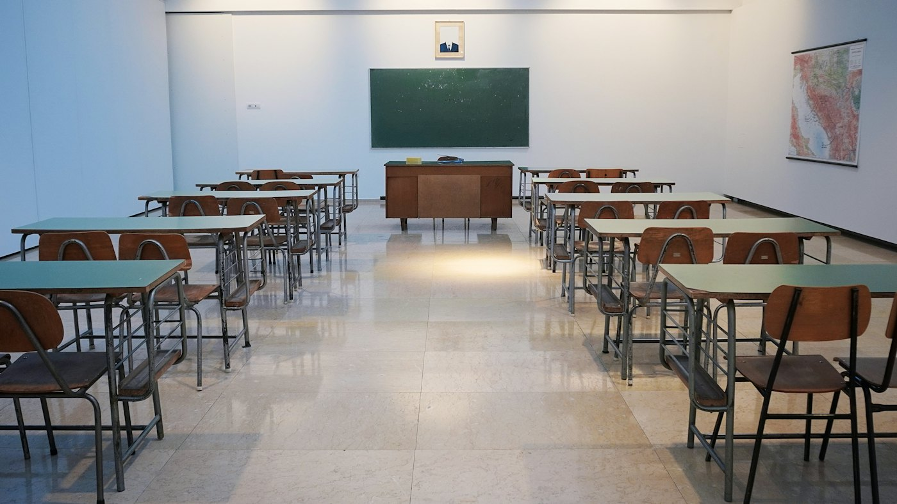

Best coaching centre, was part of 2017 batch and studied under Paul sir, Nilesh sir and Hardik sir ...
Siddhant Kaushik, on Google Maps

Accountancy, Economics, Business Studies. Class 11, 12, CUET.
4.9 on Google, 195 reviewsMoksh GauriAmity International School (Pushp Vihar)
A drawing, not real geography.
Fees: ask on WhatsApp.
Best coaching centre, was part of 2017 batch and studied under Paul sir, Nilesh sir and Hardik sir ...
Siddhant Kaushik, on Google Maps
... he is the best teacher on earth . He is like a father figure to us .
Vedika Sharma, on Google Maps
The faculty is very supportive and always maintains a friendly connection with students, which makes learning comfortable and stress-free.
Dev Saini, on Google Maps

Open every day, 9:30 AM to 8:30 PM
Directions